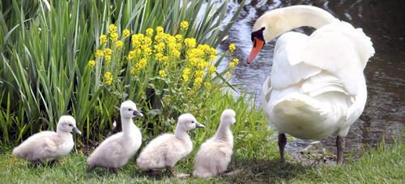

Audio reading slot ready for poetry/poems/the-grass-beneath-her.mp3.
The Grass Beneath Her
I am the damp grass beneath the weight of her, the crushed green stems holding a secret of mud and the slow, persistent push of roots. From down here, the world is a series of vertical lines, a forest of reeds where the wind likes to practice its whistling, and the yellow of the nearby blooms isn't just a color— it's a small bell of hope ringing out across the marsh. She is a Great White Silence resting upon me, a snowy hill that has decided to stay for the season. I feel the heat of her patience soaking into the earth, a watchful guardianship that doesn't need to move to make its point to the foxes and the passing crows. And tucked into that white are the interruptions— the little gray bundles of down and soft, rhythmic peeping, the heartbeat of something just beginning to realize it exists. I feel a cygnet's first official wobble through my stems, four small uncertain feet redistributing the weight of the world, legs that haven't yet learned how to balance the heavy gift of being alive. The water is right there — I know it by the way my roots lean toward it in their sleep, that silver pull whispering through the cattails about the ease of floating, about the way the surface can hold you up if you only trust the liquid logic of the pond. It's an in-between kind of afternoon, the sort of quiet that presses itself into the soil, the invisible vows of mothers settling into me like rain. The sun is low, turning the honey-sweet blossoms into lanterns, and I hold the shadow of each one as it stretches and slowly goes out. I will still be here when they leave. I will remember the precise weight of her, the four small dents where the cygnets stood and wobbled and practiced being new. The water will call, as it always does, and I will feel them lift — that sudden lightness, the moment the grass stops being needed. But for now she sits, and I hold her, and the yellow blooms ring their small bells, and none of us are ready for what comes after this.